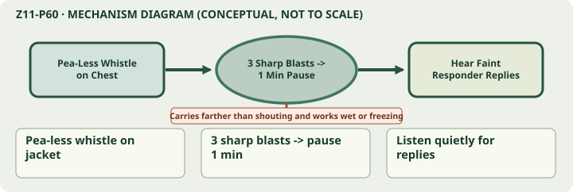

Z11-P60 · Navigation, weather and rescue · New manuscript
Use whistles and voice discipline for energy-efficient audio signaling
Alert nearby searchers or separated companions reliably over wind and forest noise without losing your voice.
When it applies · Lost-person waiting, separated group regrouping and low-visibility contact in woods or fog.
Equipment · Loud pea-less safety whistle clipped outside clothing on a breakaway lanyard.

Actions
- Use a pea-less whistle (standard ball-pea whistles jam when wet or frozen in winter) clipped permanently to an accessible chest strap or jacket zipper where cold stiff hands can reach it immediately.[E02, N09, ED]
- Sound three sharp, loud blasts spaced evenly (a widely recognized outdoor distress pattern), then PAUSE and listen quietly for at least one full minute so you can hear faint distant replies or responder whistles.[N09, E02, ED]
- Reserve shouting for close-range confirmation—shouting strains vocal cords quickly, burns energy and carries far less distance against wind or rushing water than a sharp whistle tone.[N09, ED]
Failure recognition · Wearing no whistle, screaming hoarse continuously without pausing to listen for searchers' return calls, or carrying a wet frozen ball-pea whistle.[N09, E02]
Verify · Test the whistle briefly during pre-trip check, confirm pea-less construction and verify every group member knows the three-blast distress cadence.[E02, N09, ED]
Stop or change course · Stay stationary at your sheltered spot when trading whistle calls with approaching searchers unless responders explicitly direct you to a safe visible meeting point.[N09, T06]
Evidence and editorial notes
- E02 · NPS · Ten Essentials (current web edition)
- Section: Navigation; insulation; emergency shelter; emergency food and water · Conditions: Outdoor trips; adjust kit to season and route
Support: Carry essential systems including navigation, insulation, light, water and emergency shelter.
Limitations: Carrying items without practice or cold-weather verification does not ensure readiness. · Conflicting evidence: None; baseline kit system architecture.
Editorial note: Supports failure-mode packing and kit verification cards. · Specialist reviewer: Field education and search and rescue
Primary source · checked 2026-11-24 - N09 · NPS · Outdoor Emergency Plan (current web edition)
- Section: Outdoor Emergency Plan > Signaling, Lost-Person Protocol and SAR Handoff · Conditions: Lost or overdue party awaiting search and rescue
Support: Stay put once lost unless immediate danger requires moving to nearby safer ground; preserve footprints/clues, make visible contrast signals in open clearings, answer whistle/voice calls and stay ready for responder instructions.
Limitations: Unplanned wandering expands search radius exponentially and delays rescue contact. · Conflicting evidence: None; reinforces B014-P16, P17 and P20.
Editorial note: Core evidence for lost-person psychology, signaling and SAR coordination cards. · Specialist reviewer: Search and rescue
Primary source · checked 2026-11-24 - T06 · NPS · Outdoor Emergency Plan (current web edition)
- Section: If you get lost or hurt; call for help · Conditions: Outdoor US emergency
Support: Communicate location, last known point, situation and needs. Stay put when unable to establish a safe route unless immediate danger requires movement.
Limitations: Cell signal is unreliable in backcountry terrain; pre-trip plans bridge communication gaps. · Conflicting evidence: None; core lost-person decision rule.
Editorial note: Foundation for stay/signal/move and dispatch handoff cards. · Specialist reviewer: Search and rescue
Primary source · checked 2026-11-24
Source lineage · NPS Ten Essentials and outdoor emergency plan; new manuscript · Classification · New manuscript.